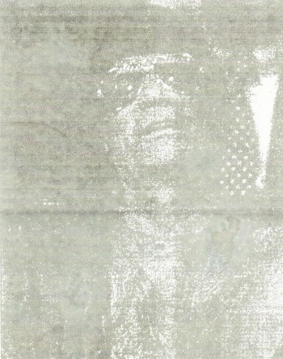

Article in The Malta Independent on a speech by Gaddafi
Gaddafi on Malta, Lockerbie
The Libyan People's Bureau has just released the text of an Eng-lish translation of the speech made by Libyan leader Muammar Gaddafi on 5 February, just after the sentencing of the Lockerbie tribunal.
Predictably the Libyan leader mentions Malta and Maltese per-sons throughout his speech.
The Libyan leader indicated that American Intelligence had fixed a list with names of a number of countries and organisations to accuse in this case after having determined that Malta, Germany and Britian are the countries through which the bomb trav-elled. The selection of these coun-tries had been political in order to look for an accused and to dis-mis the others.
Some of those people who have a conscience were the first to speak publicly after the verdict. The international lawyer profes-sor Robert Black who directs court procedures with the consent of all parties confirmed that all the elements of the case against Abdel Basset Al Megrahi were very weak.
Analysts are wondering how.
Predictably the Libyan leader mentions Malta and Maltese per-sons throughout his speech.
The Libyan leader indicated that American Intelligence had fixed a list with names of a number of countries and organisations to accuse in this case after having determined that Malta, Germany and Britian are the countries through which the bomb trav-elled. The selection of these coun-tries had been political in order to look for an accused and to dis-mis the others.
Some of those people who have a conscience were the first to speak publicly after the verdict. The international lawyer profes-sor Robert Black who directs court procedures with the consent of all parties confirmed that all the elements of the case against Abdel Basset Al Megrahi were very weak.
Analysts are wondering how.

Abdul Basset could have been present in Valletta, Frankfurt and Heathrow airport in London on the same day in order to check in the notorious bag from one plane an another. No rational judge or any one with a conscience could prove that Abdel Basset could be present in Valletta, Frankfrut and Heathrow on the same day.
Malta, Germany and Britain...Which country was accused of letting the bomb through? The accused is Libya.
The Western public has been fooled and ridiculed by the fabri-cation of the imperialist circles.
They have politically selected Libya. Libya is the accused. They say: Can we accuse Germany for being lenient with security? Shall we accuse Great Britain? They said yes to accusing Malta. Let Libya go to hell and let Malta go to hell. They chose Malta because it is the weaker link.
The bomb thus had to be in Malta. Even if it was in Frankfurt or Heathrow. They agreed it had to be the Luqa airport in Malta, even if there were evidence of Libya's non-involvement, they would still say it is Libya.
There is a Maltese analyst, who is quite well-known, called Mif-sud. He followed the case from the start and felt shocked. He said: "I do not know how the judges reached this verdict."
They say it is difficult to place an unaccompanied suitcase on a plane in Malta because of the security measures court and the judges admitted the measures in Luqa airport are strict and no unaccompanied luggage could pass through, except with its owner.
The Judges however said the bomb emanated from Malta. This is in stark contrast to what the analyst said. The analyst is very clear it is ditficult to place a suit-case in Malta airport but the judges issued their verdict on the basis that the suitcase was plant-ed in Malta. This is illogical and illegal, it is a farce.
Malta, Germany and Britain...Which country was accused of letting the bomb through? The accused is Libya.
The Western public has been fooled and ridiculed by the fabri-cation of the imperialist circles.
They have politically selected Libya. Libya is the accused. They say: Can we accuse Germany for being lenient with security? Shall we accuse Great Britain? They said yes to accusing Malta. Let Libya go to hell and let Malta go to hell. They chose Malta because it is the weaker link.
The bomb thus had to be in Malta. Even if it was in Frankfurt or Heathrow. They agreed it had to be the Luqa airport in Malta, even if there were evidence of Libya's non-involvement, they would still say it is Libya.
There is a Maltese analyst, who is quite well-known, called Mif-sud. He followed the case from the start and felt shocked. He said: "I do not know how the judges reached this verdict."
They say it is difficult to place an unaccompanied suitcase on a plane in Malta because of the security measures court and the judges admitted the measures in Luqa airport are strict and no unaccompanied luggage could pass through, except with its owner.
The Judges however said the bomb emanated from Malta. This is in stark contrast to what the analyst said. The analyst is very clear it is ditficult to place a suit-case in Malta airport but the judges issued their verdict on the basis that the suitcase was plant-ed in Malta. This is illogical and illegal, it is a farce.
The affadavit says that no unac-companied suitcase leaves Malta airport.'Even though the judges rule it was planted in Malta air-port, they themselves said they do not know how it was planted.
The judges have no other option than to commit suicide. To resign or to tell the truth as to why they contradicted the affidavit. The judges have confirmed in their Affidavit the suitcase from Malta contained the bomb but they did not prove that there was a suitcase from Malta.
The Maltese connection was not proven. They could not establish whether the bomb emanated from Malta. The key witness in the case was the shopkeeper Tony Gauci. He changed his testimony several times. He said Abdel Bas- set worked in Malta whereas it was Fhimah who worked in Malta.
Let us tackle Tony Gauci. The last witness who saw Fhimah and accused him of planting the suit-case in the airport, Gauci, the owner of a shop called Mary's House, sells shoes. His testimony is undermined as he was not sure in his testimony.
This witness, Gauci, is a key witness. What did the court say about him. From paragraph 55 to 69 it confirmed that his testi-monies were contrasting as he was not sure about Abdel Bassets description and he was not certain of the state of the weather that day. Sometimes he said it was raining and at other times he said it was not raining. The date of the pur-chase was also varied. Some- times he said it was 7 December, and another time he said it was 23 November.
In contrast to the court ruling on Bollier and Giaka the court said that the Maltese witness was honest and sincere and his testimony could be relied upon. The first impression about this witness is that he is honest and he tries hard to tell the truth. This is of course in Libyas interest because the honest witness is in Libya‘s
The judges have no other option than to commit suicide. To resign or to tell the truth as to why they contradicted the affidavit. The judges have confirmed in their Affidavit the suitcase from Malta contained the bomb but they did not prove that there was a suitcase from Malta.
The Maltese connection was not proven. They could not establish whether the bomb emanated from Malta. The key witness in the case was the shopkeeper Tony Gauci. He changed his testimony several times. He said Abdel Bas- set worked in Malta whereas it was Fhimah who worked in Malta.
Let us tackle Tony Gauci. The last witness who saw Fhimah and accused him of planting the suit-case in the airport, Gauci, the owner of a shop called Mary's House, sells shoes. His testimony is undermined as he was not sure in his testimony.
This witness, Gauci, is a key witness. What did the court say about him. From paragraph 55 to 69 it confirmed that his testi-monies were contrasting as he was not sure about Abdel Bassets description and he was not certain of the state of the weather that day. Sometimes he said it was raining and at other times he said it was not raining. The date of the pur-chase was also varied. Some- times he said it was 7 December, and another time he said it was 23 November.
In contrast to the court ruling on Bollier and Giaka the court said that the Maltese witness was honest and sincere and his testimony could be relied upon. The first impression about this witness is that he is honest and he tries hard to tell the truth. This is of course in Libyas interest because the honest witness is in Libya‘s
favour and would confirm the innocense. The court ruled that this witness is credible and honest. But this witness never identified Abdel Basset positively.
A number of persons were paraded before this witness, one of them was called Mohammad Salem. He told them it was Mohammed Salem who bought the clothes.
They brought another photo and he said it is close to him. The person's name was Abu Talb. But they still dismissed him. The court said there was a long time between the purchase of the clothes and the identification of Gauci and this makes it impossi-ble for him to identify who bought the clothes.
They asked him nine months after the purchase to remember who bought the clothes from the shop and people go in xxxxxxxxxxxxx nine months thousands would have entered the shop from all national-ities. How would be remember Abdel Basset? It is not possible for any Shopkeeper to remember who bought trousers and shirts because every day there are scores of peo-ple who come. It is not practical to ask the shopkeeper who bought it after nine months.
There is another criminal expert in the FBI investigation called Thurman. This Thurman is an officer in the American FBI. He took his son from that plane just half an hour before it took off. He told his son not to travel on that plane. This was revealed by American investigations and has been recorded in the court ruling.
Why did Solar cancel his flight with seven of his aides on the ill-fared flight and booked at a later flight? Who is Pik Botha? He is a racist from South Africa who was supposed to the flight and seven of his assistants cancelled the flight at the last moment. It has been proven that for the pre-vious ten years he never changed his booking arrangements even once.
A number of persons were paraded before this witness, one of them was called Mohammad Salem. He told them it was Mohammed Salem who bought the clothes.
They brought another photo and he said it is close to him. The person's name was Abu Talb. But they still dismissed him. The court said there was a long time between the purchase of the clothes and the identification of Gauci and this makes it impossi-ble for him to identify who bought the clothes.
They asked him nine months after the purchase to remember who bought the clothes from the shop and people go in xxxxxxxxxxxxx nine months thousands would have entered the shop from all national-ities. How would be remember Abdel Basset? It is not possible for any Shopkeeper to remember who bought trousers and shirts because every day there are scores of peo-ple who come. It is not practical to ask the shopkeeper who bought it after nine months.
There is another criminal expert in the FBI investigation called Thurman. This Thurman is an officer in the American FBI. He took his son from that plane just half an hour before it took off. He told his son not to travel on that plane. This was revealed by American investigations and has been recorded in the court ruling.
Why did Solar cancel his flight with seven of his aides on the ill-fared flight and booked at a later flight? Who is Pik Botha? He is a racist from South Africa who was supposed to the flight and seven of his assistants cancelled the flight at the last moment. It has been proven that for the pre-vious ten years he never changed his booking arrangements even once.